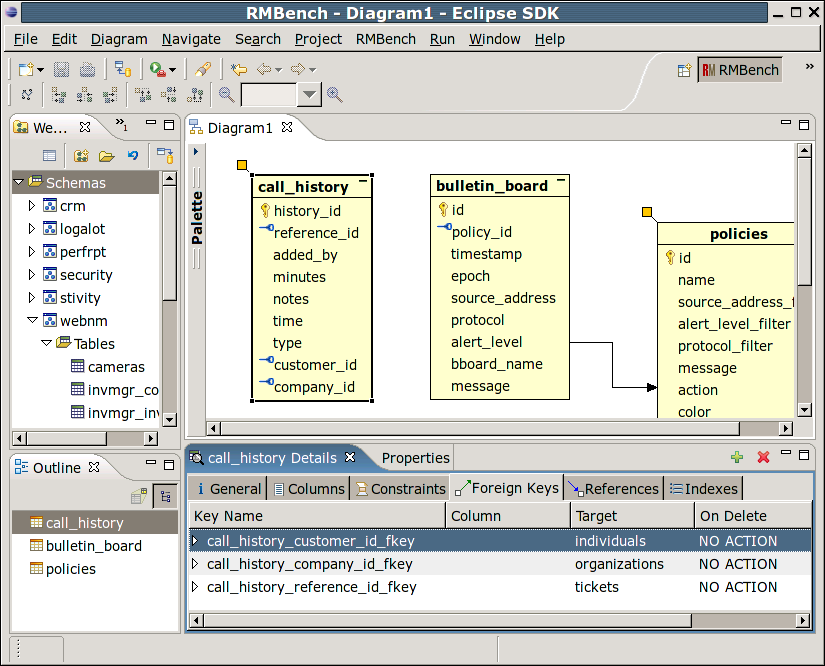

As database models in a professional environment often tend to
become quite big (sometimes consisting of hundreds of tables), RMBench is designed to be practical also under
these circumstances. One means by which this is achieved is the
separation between diagram and database model. In contrast to simple
tools, which enforce a one-to-one correspondence, RMBench
maintains a design model, which consists of
an arbitrary number of schemas and diagrams.
Each diagram can display an arbitrary number of tables from the
database schemas, and every table can be displayed in as many diagrams
as desired. That way, it becomes possible to use diagrams to explore
and document certain aspects of the database model. Together with
Eclipse's editor management features, this makes for a convenient
environment for handling and understanding large database models.
One special requirement that arises with the multiple-diagram setup
supported by RMBench is the handling of foreign key references that
cross-diagram boundaries. RMBench uses special graphical symbols
(called table stubs) to signify the fact
that a table references, or is referenced by, other tables that are not
part of the diagram.

When the mouse pointer is held over the table stub, a list is popped
up showing the referenced tables. Outgoing references bear blue arrows,
incoming ones are green. Using the Table References.. item
from the context menu over the table stub, you can also pop up a dialog
that will allow you to import the referenced tables into the current
diagram.